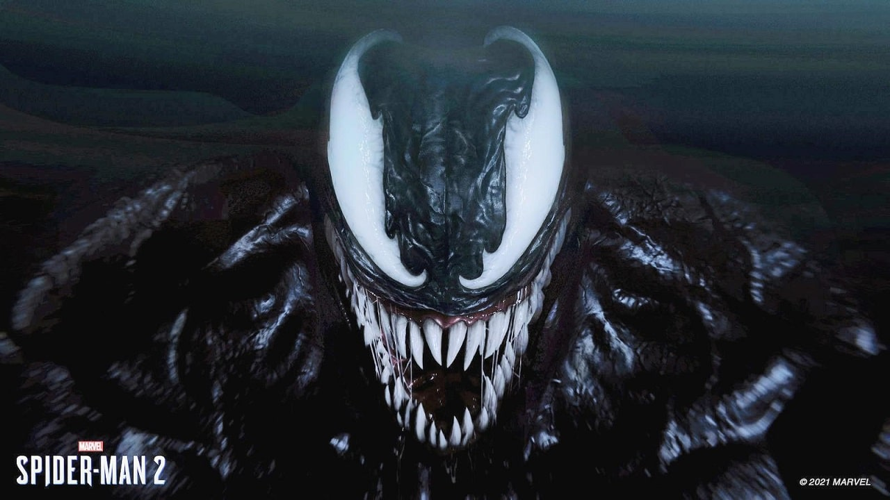

O jogo Spider-Man 2, será a sequência do seus antescessores: Spider-Man (2018) e Spider-Man: Miles Morales (2020), e será lançado apenas para PlayStation 5, desenvolvido pela Insomniac Games e publicado pela Sony. Os jogos anteriores foram bastante aclamados e um presente pra quem gosta de video-games e principalmente pra quem é fã do Homem-Aranha. O que levou a desenvolver uma sequência, anunciada em setembro de 2021, que tem tudo para ser MAIOR e tão bom quanto os dois primeiros jogos!
várias teorias

Com o teaser de anúncio em 2021, vimos os dois Spider-Mans encarando o famoso vilão Venom, o que deu a entender que ele seria o vilão principal do jogo! Já tivemos uma pequena introdução ao simbionte no primeiro jogo, e parece que nessa sequência ele terá bastante importância na história.

Com a chagada do tão esperado trailer, vimos uma gameplay na qual o Spider-Man de Peter Parker está com o clássico traje preto do simbionte, e poderemos jogar com ele, mas o que chama a atenção é que Peter está diferente, o traje parece estar alterando a personalidade dele, e isso pode ocasionar um conflito entre ele e o Miles.

Com a aparição do vilão Kraven no trailer, confirma que teremos vários vilões no jogo! Vemos ele caçando personagens conhecidos do universo do Homem-Aranha, inclusive o Lagarto, e fica o mistério sobre qual o interesse dele por trás dessa caça!